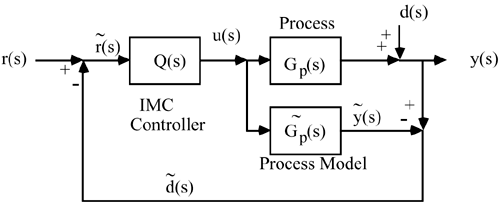
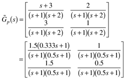
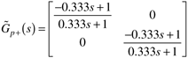
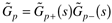
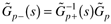
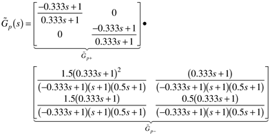
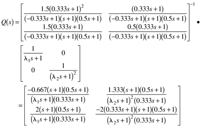
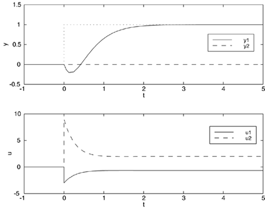

| [ Team LiB ] |
14.7 IMCThe IMC design procedure for MIMO systems is similar to the design procedure developed in Chapter 8 for SISO systems. The IMC block diagram is shown in the Figure 14-13, where the blocks now represent matrix transfer functions and the inputs and outputs are vectors. We first use an example to illustrate the multivariable IMC design procedure, then follow with the general procedure. Figure 14-13. IMC. Example 14.1, continuedHere we consider system A from Example 14.1. Recall that system A had a RHP transmission zero (z = 3 min-1)  There are a number of ways to factor this matrix. The easiest way is to place the RHP transmission zero on the diagonal of the "bad (noninvertible) matrix."  Since  , we can solve for the "good matrix" from , and find that  Where the controller is  Assume a perfect model with no disturbances. For l1 = l2 = 0.333 min, in Figure 14-14 we find the response to a step setpoint change in output 1. Notice that the output response is decoupled, although both manipulated inputs are changed. Also, although the original g11(s) transfer function did not have a RHP zero, the multivariable system has inverse response behavior in the closed loop. It should be noted that, in general, the IMC filter factors (l1 and l2) should be tuned to have different values. Figure 14-14. Response to a setpoint change in output 1, with a diagonal factorization matrix and l1 = l2 = 0.333 min. The reader should show that a setpoint change in output 2 also leads to inverse response behavior in output 2. A major disadvantage to the diagonal factorization is that inverse response appears in all output setpoint responses. It is also possible to perform a factorization that places all the inverse response behavior in one of the output variables, resulting in good closed-loop performance in the other outputs. See Holt and Morari (1985) for more details. The general multivariable IMC procedure is as follows.
|
| [ Team LiB ] |